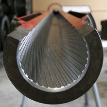

The L7 was fitted to Centurion Mark 5 tanks such as this ex-Dutch army one
Type
Rifled tank gun
Rifled tank
United Kingdom
Service history
Used by
Centurion
Leopard 1
Type 74
M48 Patton:
Type 59-II
Tiran-4Sh/5Sh
Pz-61/Pz-68
TAM
Type-69/Type-79/Type-88
Production history
Manufacturer
Royal Ordnance Factory
BAE Systems
Specifications
Mass
1,282 kg (2,826 lb)
Length
5.89 m (19 ft 4 in)
Barrel length
52 calibres 5.46 m (17 ft 11 in)
Shell
105×617mm R
Calibre
105 mm (4.13 in)
Rate of fire
10 rounds per minute (maximum)
Maximum firing range
4,000 m (4,400 yd)
The Royal Ordnance L7, officially designated Gun, 105 mm, Tank, L7, is the basic model of the United Kingdom's most successful tank gun. The L7 is a 105 mm L/52 rifled design by the Royal Ordnance Factories intended for use in armoured fighting vehicles, replacing the earlier QF 20-pounder (84 mm) tank gun mounted on the Centurion tank. The successful L7 gun has been fitted on many armoured vehicles including the British Centurion (starting from the Mk. 5/2 variant), the German Leopard 1 and early variants of the US M1 Abrams (M1 and IPM1).
The L7 is a popular weapon and continued in use even after it was superseded by the L11 series 120 mm rifled tank gun, for some Centurion tanks operating as Artillery Forward Observation and Armoured Vehicle, Royal Engineers (AVRE) vehicles. The L7, and adaptations of it, can be found as standard or retrofitted equipment on a wide variety of tanks developed during the Cold War.
History

L7 105 mm tank cut gun barrel model on display at the Deutsches Panzermuseum
Both the United Kingdom and the United States had been developing projects for large calibered guns during WWII in order to compete with increasingly heavily armored German tanks, and later for Cold War Soviet tanks. The US developed several heavy tank designs during this period, notable were the US 105 mm Gun Motor Carriage T95 (also known as "Super Heavy Tank T28") as well as the QF 32-pounder mounted on the British A39 Tortoise heavy assault tank.
The US foresaw difficulties in engagements against the Soviet IS-3 and 4 with its M47 Patton. This led to the introduction of the M103, a heavy tank designed to counter Soviet heavy tanks. It mounted an extremely powerful 120 mm cannon but the ammunition was so large that it required two loaders, one for the shell and another for the separate propellant charge. Of the 300 M103s built, most went to the Marines. The UK came to the same conclusions and developed their own heavy tank, the Conqueror, which mounted the US 120 mm gun.
United Kingdom
During the Hungarian Revolution of 1956, a Soviet T-54A medium tank was driven onto the grounds of the British embassy in Budapest by the Hungarians in November. After a brief examination of this tank's armour and 100 mm gun, British officials decided that the 20-pounder was apparently incapable of defeating its frontal armour. This meant the most common British tanks were no longer able to effectively deal with Soviet medium tank designs, let alone their heavy tanks.
These events spurred the United Kingdom to employ a new high-velocity tank gun in 1958, the Royal Ordnance L7 to keep existing Centurion tanks viable against this new Soviet tank design. While the United States to begin design development of the XM60 tank in 1957 and began user trials of the weapon in 1958. The L7 was specifically designed to fit into the turret mountings of the 20 pounder. This would enable the Centurion tanks to be up-gunned with minimum modifications; hence, the fleet could be upgraded in a shorter time and at a lower cost. The first production tank to integrate the L7 was a single up-armoured Centurion Mark 7 in 1958 which was to prove the future viability of up-armouring and up-gunning the Centurion. From 1959 onwards newly built Centurions incorporated the L7 at production.
United States
The main gun for the M60 tank series was chosen after a comparative firing test of six different guns carried out on the Aberdeen Proving Grounds in 1958. The factors evaluated were accuracy, the lethality of a hit, rate of fire, and penetration performance. Based on these tests, the 105 mm T254E1 was selected, modified to the T254E2and standardized as the Cannon, 105-MM Gun, M68. They are licensed built US variants of the L7. The T254E2/M68 used a vertical sliding breechblock instead of the T254E1's horizontal breechblock. Until American-made barrels could be obtained with comparable accuracy, British X15/L52 barrels mounting a concentric bore evacuator on the barrel were to be used. US built XM24/L52 barrels (length 218.5 inches) fitted with an eccentric bore evacuator were used for the M60-series starting in June 1959 but retained interchangeability with the British X15/L52 barrel. All of the US guns and XM24 barrels were produced at the Watervliet Arsenal, NY and the gun mounts (M116 for the M60 and M140 for the M60A1/A3) manufactured at the Rock Island Arsenal, IL. US M68 guns were fitted with an eccentric bore evacuator instead of a concentric model in order to provide more clearance over the rear deck of the tank.The original variant of the M60 tank was equipped with the M68 gun using the M116 mount. Additionally, many M48A3s armed with a 90mm gun that were in NG-CONUS service with the Army National Guard were retrofitted with the M68 gun and re-designated as the M48A5. This was done to maintain training levels of Guard units as well as using a commonality in ammunition amongst tanks.
The M60A1 and A3 variants of the M60 series and earliest pre-production XM1 prototypes of the M1 Abrams tanks are armed with the M68E1 variant of the gun. The M68E1 gun shares the same firing characteristics as the M68. It featured several design improvements including an updated gun hydraulic configuration, a stabilization upgrade for the gun, a gun elevation kill switch for the loader, improved ballistic drive and other component refinements. They were fitted with thermal sleeves on the barrels starting in 1973.During the mid 1970s it was becoming clear that the latest generation of composite based armor was impervious to tungsten carbide penetrators. Work was performed at the Department of Energy's Pacific Northwest National Laboratory to engineer development of depleted uranium as a penetrator material for future ammunition while the Armament Research and Development Command (ARRADCOM) was improving the performance of the 105mm M774 cartridge. The improved M744A1 cartridge was issued as the M833 starting in 1980 using a depleted uranium penetrator to keep the M68E1 gun viable against this improved armor. In 1975 an updated version of the gun, the T254E3 was designed, focusing on the use of chrome plating to improve accuracy. It was used to evaluate improvements to the gun's performance using discarding sabot ammunition. Two guns were built and underwent firing trials at Aberdeen and technical evaluations at the Watervliet Arsenal. Based on the results of these tests the shortcomings of plated bores and gun tubes were found to outweigh any advantage they might offer and the program dropped by May 1976.
In January 1978, a program was initiated to develop an enhanced version of the 105mm gun, the M68A1 as a possible alternate weapon for the M1 Abrams. The new XM24/L55 gun barrel was 18 inches (45.72cm) longer in comparison to the XM24/L52 barrel used on the M60-series tank. It has a higher chamber pressure, reinforced breech and a higher muzzle velocity. Although the M256 120mm smoothbore gun was chosen to be the main weapon of the M1 Abrams in 1979, the ammunition for the gun was still not fully developed, thus delaying its fielding until 1984. The early production versions of the M1 Abrams (M1 & IPM1) were armed with the M68A1 for two reasons. First was due to the large number of M60 Patton tanks with the M68E1 gun still in widespread US service in the 1980s and a large on-hand stockpile of 105mm munitions. Fitting the M1 with the M68A1 gun was viewed as an economical and practical solution that allowed for commonality in ammunition among the two types of tanks. Secondly was the fact that the M68A1E2 could employ the newly developed M900 APFSDS depleted uranium round that had improved penetration performance in comparison to the M774. These early versions of the M1 Abrams were in active Army service until 1991 and with National Guard units until 1996. M1s built after 1984 were armed with the 120mm M256 and designated the M1A1. Many earlier M1 and IPM1 tanks were refitted with the M256 and their designations changed to the M1A1.
The M1128 Stryker Mobile Gun System (MGS) carries the M68A1E4 105mm cannon. The principal function of the MGS is to provide rapid direct fire to support assaulting infantry. The cannon is mounted in a low-profile, fully stabilized turret integrated into the Stryker chassis. The M68A1E4 is based on the M68A1E2 105mm cannon's design. It has a sustained fire rate of six rounds per minute. The gun employs four types of cartridges. The M900 kinetic energy penetrator to destroy armored vehicles; the M456A2 high explosive anti-tank round to destroy thin-skinned vehicles and provide anti-personnel fragmentation; the M393A3 high explosive plastic round to destroy bunkers, machine gun and sniper positions, and breach openings in walls for infantry to access; and M1040 canister shot for use against dismounted infantry in the open. The M68A1E4 will be completely withdrawn from US service when the M1128 Mobile Gun System is retired in 2022.
Other users
The gun was subsequently adopted for use on the German Leopard 1 (for which the L7A3 variant was developed) and the Swiss Panzer 61 and Panzer 68. The L7A3 was also adopted by Japan for the Type 74 tank. The M68 gun is also featured on the Israeli Magach 6 and 7 series as well as early versions of the Merkava MBT. The Swedish Stridsvagn 103 turretless S-tank (armed with the longer Bofors L74 gun with an automatic loader) makes use of an indigenous gun design, which is compatible with ammunition made for the L7. In addition, several countries have used the gun to improve the firepower of existing main battle tanks. Derivatives have even been mounted in Warsaw Pact-built T-54 and T-55 tanks in Israel, India, Egypt and Iraq, and Type 79 tanks in China.